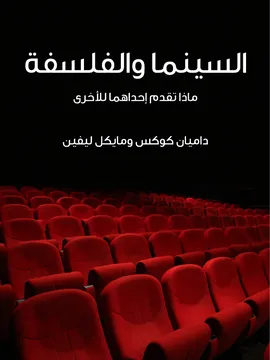

السينما والفلسفة: ماذا تقدم إحداهما للأخرى

قراءة عربية أصلية محددة النطاق في الصفحات 9 إلى 14 من ملف PDF المرتبط، وليست تلخيصا كاملا للكتاب. نناقش ما تدعمه هذه المقاطع فقط.
عبر عدسة السينما: الفلسفة تسأل والشاشة تجيب
يهدف الكتاب إلى تعريف القراء بمجموعة متنوعة من القضايا الفلسفية عبر عدسة السينما، فضلًا عن قضايا أخرى تتعلق بطبيعة السينما ذاتها، جامعًا بذلك بين موضوعين لا يجتمعان في أغلب الكتب الحديثة عن الفلسفة والسينما. يرى المؤلفان أن السينما وسيلة عظيمة القيمة لاستكشاف موضوعات فلسفية ومناقشتها، لكنها لا تخلو من أوجه خطر وقصور، فهي قادرة عبر الاستعارات والصور البلاغية على التأثير في المشاعر ومغازلة شتى الأهواء، ولهذا يُعد إبراز تلك الطرق جزءًا أساسيًا من أي منهج للتحليل الفلسفي السينمائي. يقسم الكتاب أربعة أجزاء: الأول يناقش إمكانيات السينما وسيطًا فلسفيًا وما تطرحه هي نفسها من قضايا، والثاني يتناول أفلامًا تثير تساؤلات نظرية المعرفة وما وراء الطبيعة كالشكوكية وعلم الوجود والذكاء الاصطناعي والسفر عبر الزمن، والثالث أربعة أفلام تتصل بالحالة البشرية. ويطرح المؤلفان أسئلة يتدرب عليها القارئ: لماذا تستهوينا أفلام معينة؟ كيف نكتشف تلاعب فيلم ما بحكمنا الفلسفي؟ وكيف نستغل نقاط الالتباس التي تعج بها الأفلام لأغراض فلسفية؟ ترجمة نيڤين حلمي عبد الرؤوف.
زاوية وحدود القراءة
قراءة موجزة من ص ٩ إلى ص ١٤ من أصل ٣٣٤ صفحة، تعرض تمهيد الكتاب وخطة أجزائه الأربعة، لا الكتاب كاملًا.
الطبعة والقراءة
هذه الترجمة العربية صادرة ومتاحة مجانًا بموجب اتفاق قانوني بين مؤسسة هنداوي وجون وايلي أند صنز، إنك. حقوق الترجمة محفوظة لمؤسسة هنداوي.
تنزيل PDF المجاني ↓ القراءة والمصدر الرسمي ↗